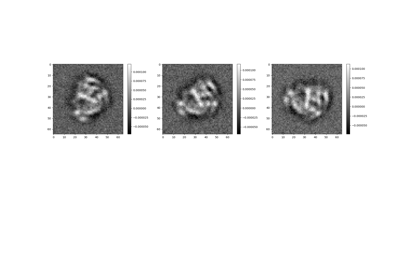

Tutorials¶
This gallery contains demonstrations of various image processing tools from the ASPIRE package, implemented using simulated data.
2D Covariance Estimation


ASPIRE Image Class
ASPIRE-Python Introduction
Ab-initio Pipeline Demonstration
Ab-initio Pipeline Demonstration
Apple Picker
Basic Image Array



Generating 3D Volume Projections
Generating 3D Volume Projections
Image Expansion
Image Preprocessing
Starfile